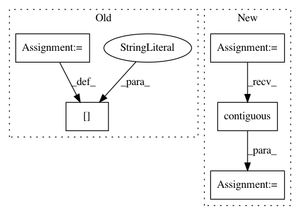

f7afc7ae76ed2c328ed02f05e91ccceec8942e0b,python/baseline/pytorch/seq2seq/model.py,Seq2SeqModel,make_input,#Seq2SeqModel#Any#,121
Before Change
example["src"] = torch.from_numpy(batch_dict["src"])
src_len = torch.from_numpy(batch_dict["src_lengths"])
src_len, perm_idx = src_len.sort(0, descending=True)
example["src_len"] = src_len
example["src"] = example["src"][perm_idx].transpose(0, 1).contiguous()
if self.gpu:
example["src"] = example["src"].cuda()
example["src_len"] = example["src_len"].cuda()
if "tgt" in batch_dict:
tgt = torch.from_numpy(batch_dict["tgt"])
example["dst"] = tgt[:, :-1]
After Change
example["src_len"] = lengths
for key in self.src_embeddings.keys():
tensor = torch.from_numpy(batch_dict[key])
tensor = tensor[perm_idx]
example[key] = tensor.transpose(0, 1).contiguous()
if self.gpu:
example[key] = example[key].cuda()
if "tgt" in batch_dict:
In pattern: SUPERPATTERN
Frequency: 3
Non-data size: 5
Instances
Project Name: dpressel/mead-baseline
Commit Name: f7afc7ae76ed2c328ed02f05e91ccceec8942e0b
Time: 2018-09-26
Author: dpressel@gmail.com
File Name: python/baseline/pytorch/seq2seq/model.py
Class Name: Seq2SeqModel
Method Name: make_input
Project Name: mariogeiger/se3cnn
Commit Name: ca5ec9585e711f63acbe337bc38c37520189b9d7
Time: 2017-08-09
Author: geiger.mario@gmail.com
File Name: se3_cnn/convolution.py
Class Name: SE3KernelCombination
Method Name: backward
Project Name: cornellius-gp/gpytorch
Commit Name: e5970f0a822c210b2859708b9556878b01c5b59f
Time: 2017-09-09
Author: ruihan.wu14@gmail.com
File Name: gpytorch/utils/kronecker_product.py
Class Name:
Method Name: kronecker_product_toeplitz_matmul